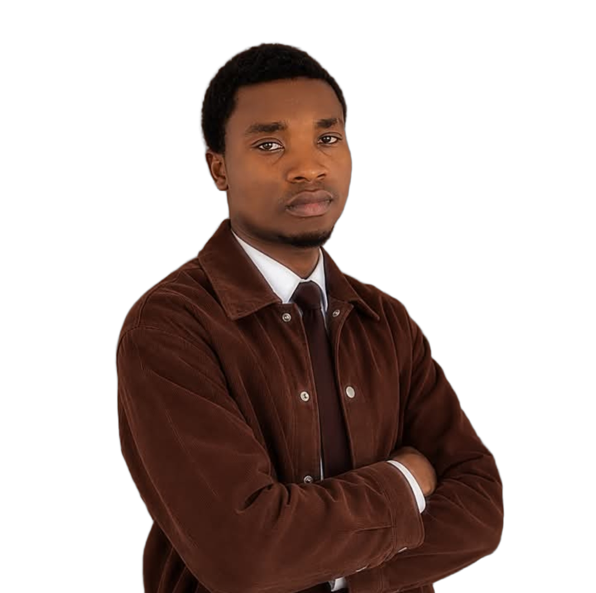

FOCUS
MIND
CM
CESARIO
MONSIA
Mindset & Focus
5 manières dont
le scrolling affecte
ton
cerveau
(CE QUE TES RÉSEAUX FONT À TON ESPRIT SANS QUE TU LE VOIES)
Cesario Monsia

Lis les
commentaires
Encore une
dernière vidéo…
5 points en commentaire 👇